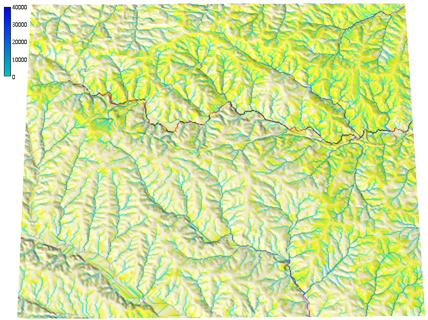
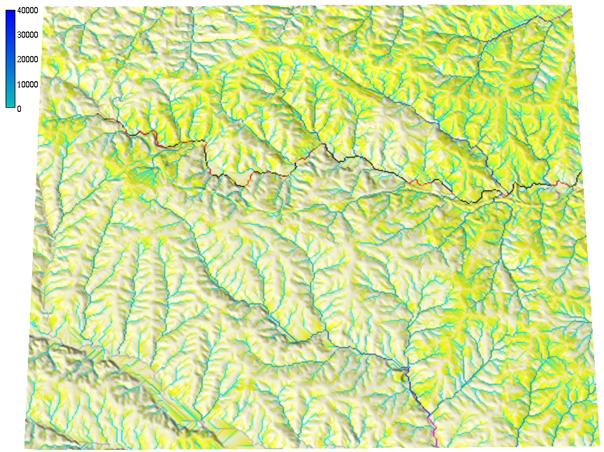

Geometry-based flow simulation
Helena Mitasova, Anna Petrasova, Vaclav Petras
GIS714 Geosimulations NCSU
Learning objectives
- concept of geometry driven flow and spread
- surface gradient and flowlines
- flat areas and depressions
- methods for flow routing on raster surfaces
- inundation flooding as spread
- height above the nearest drainage technique
Geometry driven flow simulations
- simplified cases of process based modeling, focus on spatial pattern
- flow of mass, information, biological or anthropogenic flows
- flow over physical surfaces (elevation) or abstract cost surfaces
- example: water flow pattern over complex terrain
- example: finding least cost path(s) over a cost surface, solving in optimization problems
Example: Migration in US in 80s
Surface: pressure to move. Migration pattern: flow over this surface
Surface is based on Tobler's continuous spatial gravity model, figures are from Professor Tobler's slides.
Example: Surface water simulations
- Surface water flow - overland flow accumulation
- Flooding / inundation - spread of rising water level
- Storm surge - water pushed by wind
- Coupled: storm surge + inundation + overland flow


Flow over complex surfaces
- elevation surface - bivariate function:
$$z = f(x,y)$$
- flow over this surface is driven by surface gradient
$$ \nabla f = \left( {\partial z \over \partial x}, {\partial z \over \partial y} \right) = (f_x, f_y)$$
- where $f_x, f_y$ are partial derivatives of $f(x,y)$
- $\nabla f$ is a vector in the direction of largest increase in $z$
- direction and magnitude of flow velocity over complex surface is controled by the surface gradient field $\nabla f$.
note that the direction of flow is minus $\nabla f$, because gradient vector points upslope
Surface gradient
Gradient vector field: direction and magnitude of the largest change in $z$

Gradient vector: slope and aspect
- gradient vector magnitude is slope steepness $\beta$:
- gradient direction is steepest slope direction - aspect $\alpha$,
We can compute gradient vector using slope and aspect angle $$ f_x = \tan \beta . \cos \alpha, \qquad f_y = \tan \beta . \sin \alpha$$
Estimating gradient from raster DEM
- Discrete: D8 or D16
- $\Delta z_{max}$ is found in a 3x3 or 5x5 moving window,
- results in discrete directions e.g., 0,45, ... deg
- Continuous: D-infinity
- partial derivatives of a suitable approximation function, such as spline or polynomial
- continuous gradient direction (aspect angle) <0, 360> degrees
Estimating gradient from raster DEM
Fitting second order polynomial to 9 grid points of 3x3 window using weighted least squares fitting leads to simple equations for estimating $f_x, f_y$:
$$z(x,y)=a_0+a_1 x + a_2 y + a_3 xy + a_4 x^2 + a_5 y^2$$
$$f_x={{(z_{i-1,j-1}-z_{i+1,j-1})+2(z_{i-1,j}-z_{i+1,j})+(z_{i-1,j+1}-z_{i+1,j+1})} \over {8\Delta x}}$$
$$f_y={{(z_{i-1,j-1}-z_{i-1,j+1})+2(z_{i,j-1}-z_{i,j+1})+(z_{i+1,j-1}-z_{i+1,j+1})} \over {8\Delta y}}$$

Flow routing over complex surfaces
- flowline - path of a single drop following gradient,
- flow accumulation
- density of flowlines generated from each grid cell,
- cumulative drops routed from each cell,
- upslope contributing area,
- measure of steady state flow depth
- flow patterns depend on algorithm used for gradient, routing and treatment of depressions
- gradient magnitude (slope, flow velocity) is omitted
Flow routing over complex surfaces
D-inf vector-based algorithm for generating flowlines which are perpendicular to isolines

Flow routing over complex surfaces
Flowlines and flow accumulation

Flowlines are perpendicular to contours, color map represents number of flowlines passing through each grid cell: flowaccumulation
Flow accumulation across landscape
Evolution of steady state flow with steady rainfall and uniform flow velocity

Flowline density is computed after each 10 flow routing steps
Single flow direction routing
- SFD Single flow direction - moves entire unit of flow into a single downslope cell in the gradient direction
- Discrete D8 and continuous Dinf gradient direction


when D8 is sufficient? SFD over noisy surface mitigates the D8 artifact
Flow routing with dispersed flow
MFD - multiple flow direction - partitions flow into two or more downslope directions

Weighted flow routing
Simulation of spatialy variable source areas

Land use map with developed areas (orange) and associated runoff weights - in blue areas all water gets routed, in grey areas only a fraction
Weighted flow routing
Simulation of spatialy variable source areas
 

Note that the flow accumulation in some of the rivers cannot be used to estimate peak flow because the flow is not routed through the entire watershed - upper part of the contributing area is outside the region
Stream extraction
- Automated stream mapping: extracting connected stream network from flow accumulation map
- Stream raster map is derived using map algebra based on flow accumulation threshold
- Result is converted to vector representation of a connected stream network
- Stream origin is dynamic, often driven by groundwater: additional information is needed for accurate identification
Stream extraction
Flow accumulation from 30m NED using SFD D8 method, threshold accumulation: 100 cells, and a vectorized extracted stream network
Stream mapping accuracy
Compare USGS NHD stream (red), stream extracted from 1ft resolution DEM (blue), on ground within stream GPS points

Flat areas and depressions
- What is gradient in flat area? In depressions?
- Many algorithms were developed for routing through flat areas and depressions
- Hydrological flattening, enforcement, conditioning
- New (and some old) algorithms do not require depression filled DEM
Flow routing through depressions
Depressions "trap" flow
Sources of depressions in DEMs:
- real topographic features
- noise, measurements errors
- processing artifacts
Depressions filling: lidar DEM
Depressions in lidar-based DEM and flow accumulation using DEM filling
Many depressions are artificial lakes where bridges or roads create dams
Depressions filling impact on erosion modeling
Filled depression in a lidar-based DEM leads to artificial flow pattern, sediment transport and erosion distribution
This filled depression is an artificial lake where a roads creates a dam (culvert under the road is not captured in the data). Image credit: Ribeiro Araujo Matheus Jesus
Handling depressions
Filling
Handling depressions
Filling, carving
Handling depressions
Filling, carving, hybrid
Handling depressions
Filling, carving, hybrid, least cost path
Depressions filling: radar DSM
Radar (SRTM, IFSARE) DSM include vegetation surface leading to complex, nested depressions


Filling alters elevation in large areas
Depressions: carving
Carving streams from digitized stream data may introduce artifacts, if the digitized streams do not match the DEM

Depressions: LCP issues
- Roads are elevated over bridges and culverts
- Least cost path stream is routed along lower elevation, redirecting the flow away from the actual stream
- Solution: carving through the road or imposed gradient, if the location of bridge/culvert is known
Hydrologically enforced DEM
Modified DEM with connected stream network where each grid cell drains into the outlet
- hydrologically enforced DEM does not have depressions or flat areas
- it should not be referred to as hydrologically correct, because all wetlands are removed
Inundation flooding
- elevation threshold - bathtub model
- spread of water from source - friction gradient rather than elevation gradient
- hydrologically connected surface water level
- HAND: height above the nearest drainage technique
- interpolation between pre-computed flood levels along the source stream section(FIMAN)
Flooding - bathtub model

Flooding - lake model
- Creates hydrologically connected area (lake) from a given point at a given elevation
- Valid for small flat areas with point source, approximates steady state, uniform flooding
water level at 90m asl
Flooding - lake model
- Simplified storm surge - series of lake models
- Neglects time and water mass: worst case scenario
Flooding - inundation (spread) model
- Channel has variable elevation: Height Above Nearest Drainage methodology
- Using flow direction, compute raster where each cell is $\Delta z$ between the given cell and the the cell on the stream into which the cell drains.

Flooding - inundation dynamic
Implemented in mapbox
FIMAN
- Scenario simulation: Interpolation between water levels predicted by process based model, limited to areas near stream gauges
- Coupled with real time observations

Summary
- we have defined surface gradient and how to compute it from a raster surface
- we have learned about methods for computing flow direction (D8, Dinf) and flow routing SFD, MFD
- we discussed flow through flat areas and depressions
- we have applied flow routing to extract streams
- we have learned about methods to map inundation flooding